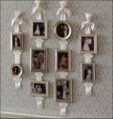
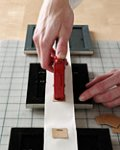
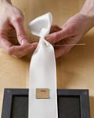

Tip #1: Never paint over your smoke dectectors, even if they will stand out being white.
Paint quality:
-The higher the quality of paint you use, the better your results will be, but you don�t have to buy the most expensive, prestigious brand to get a great result. I used to buy the cheapest paint, ColorPlace brand (WalMart�s generic brand), before I knew better, but it has a watery quality so it takes at least 2 coats if not more to give you a good result.
-A watery base equals frustration and waiting. You want a thick base the consistency of�waffle batter, I guess. I prefer to spend twice as much to get Kilz or even Dutch Boy in order to get a one-coat paint, because I�ll be spending twice as much to use half as much, so it comes out even, but with less frustration and waiting for paint to dry.
-I like cans that are plastic with a screw top instead of the metal cans that you open with a paint can opener or screw driver. The metal cans eventually rust on the lid, which drops into the paint when you open it, and it�s messy to pour and close, and you�re always hunting for something to open the can with. The screw tops are convenient because they open and close easily, the lid doubles as a paint tray for touching up, and it�s less messy when pouring. Kilz and Dutch Boy come in these cans.
-I don�t have a home improvement store close enough to know about the types of cans their brands come in. Kilz is my favorite so far that I�ve used, but Dutch Boy is a cheaper, okay alternative.
Roller Covers:
-If your walls are untextured, do not buy cheap roller covers!!!! Their fuzz falls off while you�re rolling and gives your walls an eerie hairy appearance. You will go crazy picking it off and rerolling, only to pick again. Get the microfiber roller covers that are white, not beige like the cheapies. They shed much less and are much easier on your patience. Well worth the extra money!! If your walls are textured, it doesn�t really matter because you�ll never see the hairiness. Cheap is fine.
-I prefer covers that are reusable (plastic interior, not cardboard) so I can wash and reuse them tons of times. It saves money in the end.
Paint Sheens:
-Paint comes in 5 sheens: flat, eggshell, satin, semi-gloss, gloss. Flat has no shine, and it progressively gets shiner until you get to the high shine of gloss. The price gets higher as the shine gets glossier.
-Flat makes your walls look dead, but some people like to use it on ceilings. I never use flat. You can�t scrub it, and if you wipe it, it comes off.
-Eggshell is fine for walls, but it�s not always easy to find an eggshell sheen. It�s usually only at paint stores, not always at hardware stores and WalMart.
-Satin is my sheen of choice. I use satin in every room because it gives you a slight shine without too much reflection. You can wipe the walls, but you can�t scrub vigorously. It always looks good!
-Semi-gloss is good for kitchens and trim or places you need to scrub a lot. I rarely use it unless it�s for an accent with my satin. I think it the future I�ll use it on my trim since I have to wipe it a lot with kids.
-Gloss is super shiny and I�ve never used it because I don�t want to see my face in the wall or trim. It seems awkward to me.
Keeping a crisp line between two paint colors:
Have you ever tried to paint a wall without it getting onto your white ceiling, or paint a stripe on a wall, and even though you use tape to mark it off, the paint seeps under the tape and gives your line a jagged appearance? No more!! Here�s how to paint a crisp, sharp line when you�re painting stripes on your walls, or if you want to paint by your ceiling or trim without touching up afterward:
1. Paint your base color, let it dry thoroughly (or else when you tape, it will lift your base color off the wall), then mark out your stripes on the wall with a pencil, measuring tape, and level.
2. Apply painter�s tape (usually blue, but sometimes green or purple) at your pencil line on the base color side.
3. Take a brush or roller and paint the pencil line side of the tape with the base color so your base color seeps under the tape. This will seal your tape to the wall and not allow the next color to leak under.
4. As soon as that�s dry, paint your next color in the stripe and remove the tape before it�s completely dry. I usually take it off just as it tries to get tacky. Your line should be crisp and clean.
If you wanted to paint a pattern on your wall (say diamonds for an argyle appearance for instance), you use the same method. Just paint your base color, let it dry, mark out your entire pattern on the wall, tape the whole thing off at the pencil lines, paint the base color on the side of the tape that touches the pencil lines so it seeps under the tape, let dry, then paint the accent color and remove the tape.
One way to give your walls some textural interest without being too obvious is to paint a pattern on your walls with one color, but two sheens. If you use satin as your base and semi-gloss as your accent, the semi-gloss will reflect more light and subtly stand out when the lights are on, but it won�t be so obvious that it catches attention immediately. (see picture)
Furniture Arrangement:
Picture Hanging:
Flooring:
Tip #1: Did the kids draw on your walls with crayon, marker, pencil, dirty fingers, tomato sauce, blood, etc? Mr. Clean magic erasers are the best invention ever for cleaning walls, doors, and trim. Walls are safe again!!!
CRAFTS
PICTURE IDEA FOR A CHILD'S BEDROOM
A fun idea for a kiddy bedroom is to put the child's name, one letter at a time, into individual frames. This idea originally came from the Pottery Barn Kids website. It's a great site with loads of adorable ideas. Daisha made this one for Tabitha by finding a font that she liked on the internet, adjusting the size then printing it out. She then bought a pink matt for each of her 4X6 frames, centered the printed letters then cut them down to fit the frames. It's a fun, fairly painless project that most kids will love (especially if you let them pick the font and colors).

OLD FASHIONED PICTURE CHAIN
Tiana found this great project online (source?) and intends to use it with silhouettes. If you got silhouettes of your children from the pictures Melanie took at Cluffmas 2006, you might want to preserve them this way too. Daisha did something similar with her kid's silhouettes last Christmas and gave it as a gift to her in-laws with great success. It's not just a great present; it's a great decoration for a family room or a child's bedroom as well. If somehow you didn't get a silhouette of your children please contact Melanie or Daisha.
"Personal photographs make a reception space feel like home, and you don't need a hammer and nails to display them. Gather pictures of the bride and groom as children, plus relatives' wedding portraits; arrange on ribbons with calligraphed labels. Hang by the seating-card table for all to see.
Tools for the Task
Removable 3M self-adhesive hooks are the secret to our photo display. Plastic hooks stick securely to the wall but pull off without damaging paint or most wallpaper.
Photocopies/Silhouettes in wood or plastic frames
Wide satin ribbon
Heavy-duty staple gun
Chipboard or cardboard cut into 1-inch squares
Card-stock tags with names and year (optional)
White craft wire
Photo Wall How-To 
Before you begin, be sure to check with your reception site about any restrictions on hanging things from the walls. To safeguard original photos, make color photocopies, reducing or enlarging as needed. Choose frames that coordinate with the reception site's decor.
1. Remove the support legs from the backs of frames, or tape flat. Place frames facedown at even intervals on a cutting mat marked with a grid.

2. Lay a length of satin ribbon down the middle of the frames, allowing 10 inches of overhang at both top and bottom; trim bottom end with pinking shears. For reinforcement, center chipboard squares on ribbon just inside top and bottom edges of frames; staple in place.
3. Fold top end of ribbon back 3 inches. About 2 1/2 inches from top, pinch ribbon, and center it over an 18-inch length of wire; wrap wire tightly around ribbon twice.
4. Bring both ends of the wire together, shape into a small loop, and twist to secure. Trim excess wire. To hang, slip wire loop over a removable self-adhesive hook that has been attached to the wall. To hide the wire, loosely knot a length of satin ribbon (about 9 inches long) and cut ends diagonally; affix to ribbon with double-sided tape. Attach labels with names and years under photographs using double-sided tape."
PERSONALIZED KIDDY PICTURES
When Tabitha started drawing, instead of just scribbling, the first thing she came up with was a flower. Daisha was so enchanted by Tabby's new-found talent that she had a hard time throwing any of the dozens of flower drawings away. So she came up with an idea to preserve some of the drawings without feeling guilty about throwing the rest away. She bought nine wooden frames for 4X6 pictures, sorted the drawings into colors that matched Tabitha's room and then cut them to size. You could use any kind of arrangement you like, Daisha did a 3X3 arrangement to fit a space that needed to be filled in the room. If you can't find frames that match go for the shabby chic thing and cluster a bunch of mismatched frames together. It's best if they have a certain theme in common like all silver or all white or all ovals and circles etc.